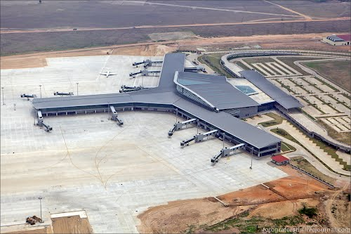
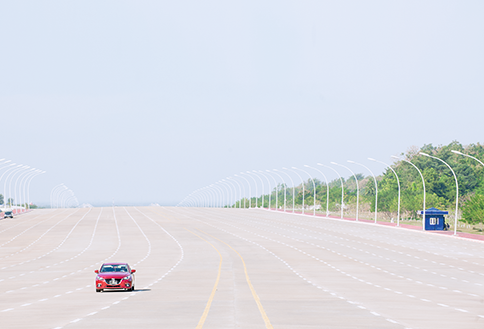

Nay Pyi Taw Transportation
Air

.jpg)
Naypyidaw Airport, also known as Ayelar Airport, is 16 km (10 mi) south-east of the city, between the towns of Ela and Lewe. It is served by all domestic airlines—Air Bagan, Air Mandalay, Myanmar National Airlines, FMI Airand Yangon Airways—with regular flights to Yangon and other cities across the country. Since April 2009, the airport is undergoing major expansion to handle up to 3.5 million passengers per year.
Direct international flights include Bangkok, Kunming & Kuala Lumpur.
Railway System

Naypyidaw railway station (published as Nay Pyi Taw railway station) was opened at milepost No. (233/0), between Ywataw station and Kyihtaunggan station on the Yangon-Mandalay railroad with a station area of 2,700 m × 1,200 m (9,000 ft × 4,000 ft) and a covered area of 334.5 hectares (826.5 acres). Construction began on 8 December 2006 and Naypyidaw railway station was opened on 5 July 2009, even though the overpass, locomotive shed, concrete road leading up to the station, parking lot, passenger lounge and platform were not completed.
Myanmar Railways has announced that passengers traveling on all trains except mail and local ones are to get off only at Nay Pyi Taw Station as they will not stop at Pyinmana Station after the inauguration of Nay Pyi Taw Station.
Before the opening of Naypyidaw railway station, Naypyidaw was served by Pyinmana and Lewe stations, though only Pyinmana station is on the main rail line (which extends from Yangon-Bago-Naypyidaw-Thazi-Mandalay). Lewe station is on the way from Pyinmana to Kyaukpadaung. It takes nine hours by train to get from Yangon to Pyinmana; trains leave at 12:00 and arrive at 21:30 local time
Vehicals System

.jpg) Naypyidaw has four-lane roads and multilevel, flower-covered roundabouts (traffic circles). Government ministries run shuttle buses in the morning and evening to their respective buildings.
The city has a central bus station and one taxi company, which is operated by the military.
Motorbikes are banned from some roads in Naypyidaw city limits, including sections of Taw Win Yadana Road, as a result of hundreds of traffic accident-related deaths in 2009.
Naypyidaw has four-lane roads and multilevel, flower-covered roundabouts (traffic circles). Government ministries run shuttle buses in the morning and evening to their respective buildings.
The city has a central bus station and one taxi company, which is operated by the military.
Motorbikes are banned from some roads in Naypyidaw city limits, including sections of Taw Win Yadana Road, as a result of hundreds of traffic accident-related deaths in 2009.
 Facebook:
Facebook:  Email:
Email:  Browser:
Browser:  Phone:
Phone:  Address:
Address: